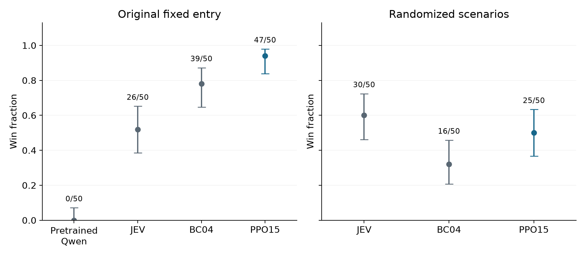

Teaching a small language model to play
I trained a 0.8-billion-parameter language model to play a Game Boy boss encounter. Pretrained Qwen3.5-0.8B, without any gameplay fine-tuning, won 0 of 50 games under the evaluation interface. After learning from demonstrations it won 39 of 50, and after reinforcement learning it won 47 of 50. Here is the resulting policy in action.
Learn from demonstrations, then play for rewards
In Kittie Has Other Plans, Kittie must hit Head Goon three times with a wool ball while the boss is vulnerable. That means moving, jumping, timing throws and recovering the ball. The game keeps running while the model decides what to do.
I started with pretrained Qwen3.5-0.8B. Behavior cloning teaches it to imitate successful gameplay demonstrations from JEV, a separate model that also serves as an evaluation reference. That produces BC04. I then use proximal policy optimization, or PPO, to train the policy on its own Head Goon episodes, rewarding completion and boss hits and penalizing damage and failure.
Result: BC04
Reported: PPO15
The policy reads a text description of the current game state and chooses button controls. The video shows what happened in the game; the model receives positions, health and other state information. The methods below specify the observation, action choices and training setup.
I wanted to see how much PPO improved the trained encounter, then whether that performance held up when I changed the boss's starting position and attack schedule.
The trained encounter: 78% to 94%
These evaluations use the original encounter: the same saved starting state and boss schedule used for PPO training. Each policy plays 50 games. Qwen chooses its highest-probability action at each decision.
| Policy | Wins | Win rate | Nominal 95% interval | Latency, ms |
|---|---|---|---|---|
| Pretrained Qwen | 0/50 | 0% | 0.0% to 7.1% | 148 |
| JEV | 26/50 | 52% | 38.5% to 65.2% | 234 |
| BC04 | 39/50 | 78% | 64.8% to 87.2% | 288 |
| PPO15 | 47/50 | 94% | 83.8% to 97.9% | 285 |
Pretrained Qwen won 0/50 games before any gameplay fine-tuning. The outcomes were two deaths and 48 timeouts, with no boss hits. Its nominal 95% win-rate interval is 0.0% to 7.1%; zero observed wins does not establish a zero underlying success probability. I used the same textual observations and greedy action-scoring interface as BC04 and PPO15, with no adapter or prompt search. This measures the pretrained model under that interface, not its best achievable gameplay with different prompting. All recorded evaluation outcomes.
Latency is the mean of episode-median observation-to-action times, excluding the post-action interval. This statistic is used consistently in both main tables.
PPO15 won 47/50 games, compared with 39/50 for BC04 and 26/50 for JEV. Relative to BC04, the observed improvement is 16 percentage points, with nominal 95% interval 2.2 to 29.8 points and Fisher p = 0.0407. Relative to JEV, it is 42 points, with interval 25.3 to 56.1 points and p = 2.65 × 10−6. PPO15 performs better in these recorded evaluations. Differences in serving conditions and action selection limit what I can attribute to training alone.
I chose PPO15 as the headline checkpoint after seeing evaluation results. The comparison is exploratory, and these repeated games measure performance from one fixed start.
Changing the encounter exposes a limit
Could the policy still win if the boss started somewhere else, waited a different amount of time, or hopped a different number of times before becoming vulnerable? Without further training, I tested all three policies on the same 50 randomized scenarios.
I randomized the boss's starting position, the duration of each patrol, and the number of hops in each attack sequence. The time available to hit him stayed the same. The exact ranges are listed below.

| Policy | Wins | Win rate | Nominal 95% interval | Latency, ms |
|---|---|---|---|---|
| JEV | 30/50 | 60% | 46.2% to 72.4% | 188 |
| BC04 | 16/50 | 32% | 20.8% to 45.8% | 314 |
| PPO15 | 25/50 | 50% | 36.6% to 63.4% | 310 |
Observed win rates fall to 32% for BC04 and 50% for PPO15. PPO15 wins 15 scenarios that BC04 loses; BC04 wins 6 that PPO15 loses. The paired difference is 18 points, with nominal bootstrap interval 0 to 36 and exact p = 0.0784. The data favor PPO15 numerically but leave improvement under scenario variation uncertain.
JEV wins 60% of scenarios and has lower response latency. Its ten-point advantage over PPO15 has paired interval −6 to 26 points and p = 0.3593. This does not establish a win-rate difference or equivalence. These evaluations do not isolate why the observed rates differ. All outcomes remain included.
What I take from this
The pretrained model failed to win under this action interface, while BC04 won 39/50 and PPO15 won 47/50. This makes learning from demonstrations the first substantial gain in the recorded comparison. The clearest result after PPO is strong performance on the encounter used for training. The policy wins less often when the encounter changes. PPO15 still wins more randomized scenarios than BC04, but this sample leaves the size of that improvement uncertain.
JEV and Qwen differ in training history, action selection and response time. In a separate test, adding delays to JEV reduced its win rate. Response timing matters in this game, but that test does not explain the whole performance difference between the models.
These results come from one training lineage, with checkpoint selection and follow-up tests informed by earlier results. Original encounters repeat the same starting state. Serving hardware also differed between the original and randomized evaluations; its contribution to the change in win rate was not measured. Hardware details are in the supplement.
How I trained and evaluated the policy
Game and policy interface
The player must hit Head Goon three times with a wool ball while the boss is vulnerable, then reach the encounter's completion state. The player can move, jump, throw the ball along a flat or lobbed path, and recover it after a throw. The boss alternates between movement, attacks and vulnerability windows. Contact can damage the player. I call the fixed starting state and standard boss schedule used for PPO training the original encounter.

Kittie is on the left; Head Goon is on the right. The player must time throws to hit the boss during vulnerability windows.
Frame extracted at 2 seconds from the retained PPO15 winning replay. Watch the replay.
At each decision, the emulator supplies a structured text observation containing positions, health, held buttons, boss phase, ball state, recent events and derived physical forecasts. Forecasts use information available at the observation time; they are not observations of the future. An actual randomized-encounter prompt shows the state fields and mechanics instructions.
Each action combines the following controls, giving 3 × 2 × 3 = 18 possibilities:
| Component | Choices |
|---|---|
| Horizontal control | Neutral, left, right |
| A-button control | Released, held |
| Throw control | None, flat, lob |
For example, “right + A held + lob” holds Right, A, B and Up together. Jumping and throwing require fresh button presses, so holding A or B does not repeatedly trigger the action. In dedicated Qwen evaluations, I choose the combined action with the highest probability. JEV returns a movement/A-button choice and a throw choice for each facing direction; I apply the throw choice matching the resulting direction. Neutral movement preserves the current facing. Both use the same physical controls, but their selection procedures differ. The supplement lists all 18 combinations and the probability calculation.
Supervised and reinforcement fine-tuning
Behavior cloning starts from pretrained Qwen3.5-0.8B and uses successful JEV demonstrations from five game levels. The resulting checkpoint is BC04. The initialization and supervised-stage details appear in Appendix A. JEV's evaluation games are separate from these success-filtered training demonstrations. Whole demonstration trajectories remain in their assigned training, validation or held-out splits.
| Setting | Behavior cloning | Head Goon PPO |
|---|---|---|
| Training data | Successful JEV demonstrations from five levels | Fresh complete Head Goon episodes |
| Schedule | Supervised stages specified in Appendix A | 16 iterations, up to 2 passes each |
| Actor learning rate | 5 × 10−5, then 10−5 | 3 × 10−6 |
| Effective batch size | 32 | 64, accumulated singleton forwards |
| Adapter / optimizer | Rank-8 LoRA / AdamW | Same adapter / continuous PPO state |
| Compute configuration | One Modal A10 worker at a time | One Modal A10 worker at a time |
The final BC stage uses 70 successful training trajectories with 4,423 decisions, including 552 Head Goon decisions from 11 trajectories. Validation and held-out splits contain 1,360 and 1,632 decisions. BC minimizes weighted negative log likelihood. Appendix A specifies the full BC sequence, weighting and source records.
Each PPO iteration collects at least 512 decisions and eight complete episodes, allowing whole-episode overshoot. Rollouts sample actions at temperature 1. PPO uses clipping coefficient 0.2, entropy coefficient 0.01 and numerical/KL safeguards. Recorded action probabilities, values and advantage targets remain fixed during each update. A separate critic predicts remaining discounted reward from detached Qwen features; critic fitting does not update Qwen. Actor, critic, optimizer and random-number-generator state continue across iterations. Full settings appear in Appendix B.
The reward encourages completion and boss damage, penalizes injury, failure and elapsed time, and favors hits with fewer preceding rebounds:
| Event | Reward |
|---|---|
| Complete encounter | +100; additionally +2 per remaining heart and +2 per carried ball |
| Damaging boss hit | +20 × 0.5b, where b is the number of preceding surface rebounds in that throw |
| Unique boss defeat | +2 |
| Player damage | −4 per heart lost |
| Player death | −30 |
| Episode time limit | −5 |
| Elapsed game time | −0.1 per second |
Pickup and a new throw reset the rebound count. Boss-hit response, resting contact and the top of a flight arc do not count as surface rebounds. Traversal-only distance and bell rewards are inactive in Head Goon. Boss reward implementation and shared event rewards.
Evaluation and scenario variation
I completed 16 PPO iterations and chose PPO15 as the primary reported checkpoint using subsequent 50-game evaluations. These are exploratory comparisons rather than independent tests of a checkpoint chosen in advance. PPO10 remains a secondary analysis in the supplement.
The original-encounter cohorts contain 50 games per policy from one saved starting state. The randomized cohorts use 50 shared scenarios generated independently of their outcomes. These parameters were not randomized during training.
| Variable | Randomized values | When sampled |
|---|---|---|
| Boss starting position | Integer x coordinates 256 through 304, equally likely | At the start of each scenario |
| Patrol duration | 27 through 81 game updates, equally likely | At each patrol |
| Hops before recovery | 1, 2 or 3, equally likely | At each attack sequence |
The vulnerability window remains 72 game updates, and other game mechanics are unchanged.
All policies receive current countdowns and committed hop counts; future schedule draws remain hidden. Each scenario supplies the same native entry and schedule to every policy. Each game ends at completion, death, 90 seconds or 5,400 frames. Qwen uses greedy joint actions; JEV uses its returned choices. Model inference occurs while the game runs. Appendix C reports measured timing distributions and the separate JEV delay experiment; Appendix D reports the one-frame sensitivity check.
Analysis
I report nominal 95% Wilson intervals for win rates. Separate original-encounter cohorts use two-sided Fisher tests and unpaired score intervals. Randomized comparisons use whole-scenario pairing, bootstrap intervals for the difference and exact two-sided McNemar tests. Analyses are exploratory, with no multiplicity correction. Fixed-entry repetitions can share trajectories and timing correlations; intervals do not include uncertainty across independent training runs.
Reference implementation and analysis companion
The methods and code guide links the observation builder, button mapping, BC objective, PPO updates, reward calculation and settings. Small analysis scripts regenerate the tables and figures from 560 included evaluation records. The supplement documents secondary results and their evidence.